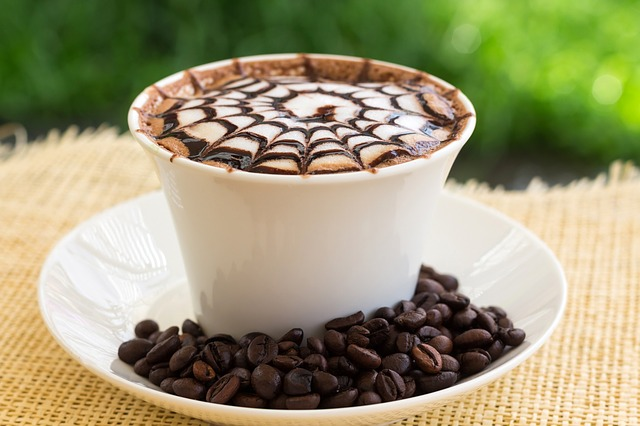

A caffè latte, usually just referred to as a latte these days, is a specialty coffee drink that is made up of three basic parts: steamed milk, espresso and flavor shot(s).
Vanilla Latte:
Very few people can deny wanting a little hint of sweetness in their drink without committing to a full sugar overload—that is where vanilla comes in
Caramel Latte:
A little sweeter than vanilla but just as likable! Caramel is advertised as “buttery and rich”, which makes for the perfect addition to a drink
Mocha Latte:
A latte can be flavored with a chocolate syrup,Also called a “caffe mocha”,
steaming some chocolate powder with milk and adding it to espresso is like heaven in a cup.
Vanila latte
 ₹ 125
₹ 125
₹ 125
Caramel Latte
₹ 97
Mocha Latte

₹ 1350